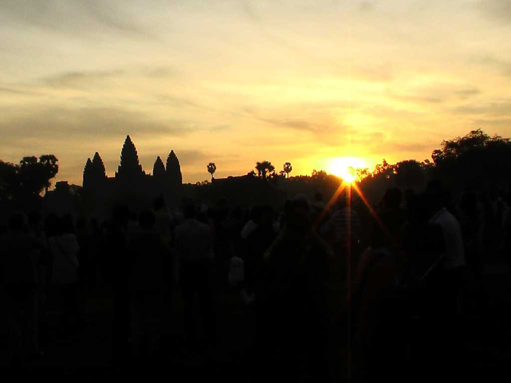
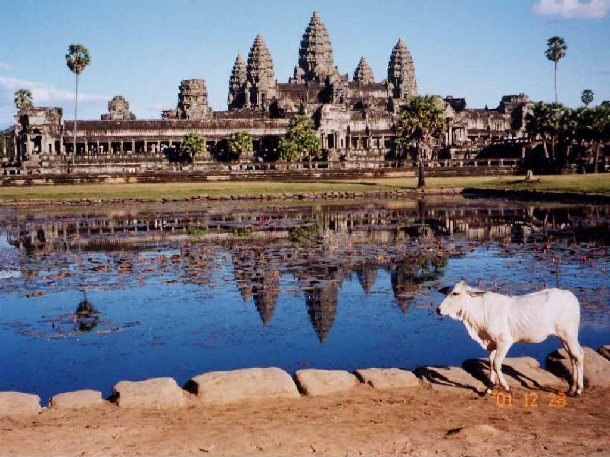
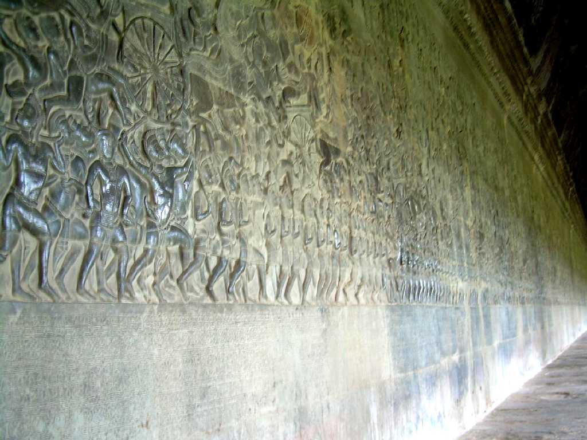
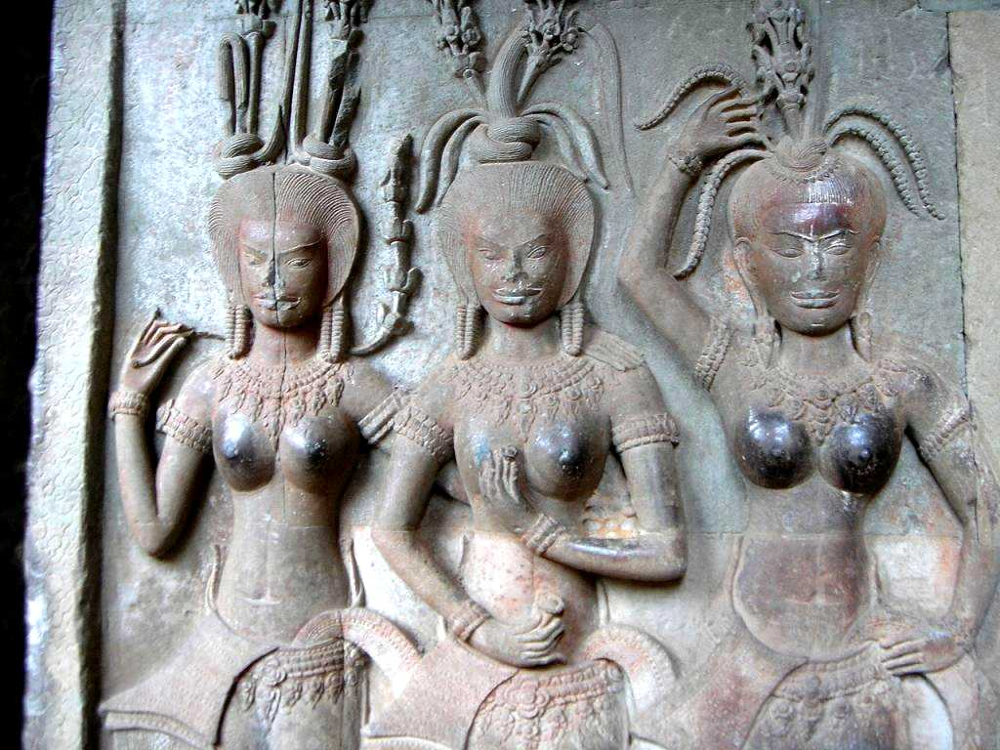

Sunrise Angkor Wat January 1 2007 6:38
平成１９年の初日の出はアンコールとなり冬至に近いため最も南（右）から太陽が昇るが春分秋分のころは中央の聖道から見ると中央祇堂の頂点から昇る

Angkor Wat
アジアの宝石と称えられる世界最大の石造建築寺院 ９世紀から１５世紀に栄えたクメール王朝の王都に３５年の歳月を費やして創られたスーリヤヴァルマン２世のヒンズー教寺院 特に第一回廊の四面７６０mに亘る壮大にして繊細なヒンズー教物語レリーフは美しくさらに１３ｍ６０度の石段を登ると高さ６５ｍの中央祇堂の須弥山を囲む四面２４０mの第三回廊に達し天女アプサラのレリーフに出会う
Apsara Bas relief at West Gate
東西１５００ｍ南北１３００ｍの敷地にある幅２００ｍの濠を渡ると西塔門に達し内側には天女の美しいレリーフが残っている ヒンズー教の世界観により敷地を囲む濠は海 敷地は大地 中央祇堂は聖なる山を表している

Bas relief at 1st Gallery 乳海撹拌
第一回廊東面のレリーフ ５０mに亘るヒンズー教の天地創造で乳の海を神々が大蛇を引き掻き混ぜ太陽と月ができ大地と海を創造した物語 ヒンズー教の真理 アルタ実利 ダルマ道徳 カーマ性愛

Apsara Bas relief at 3rd Gallery
第三回廊の天女達のレリーフ 中央祇堂にはビシュヌ神が祭られていたと言われ第三回廊に入れるのは王様に限られていた